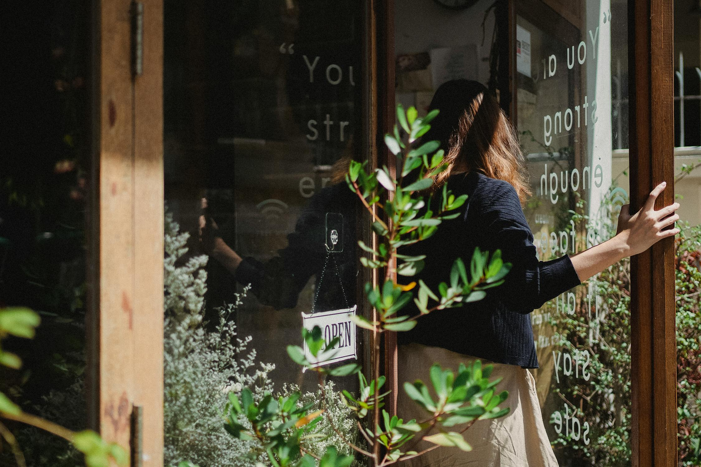
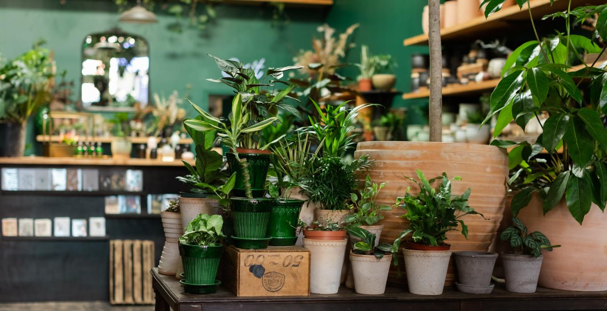

Sobre nosotros
En Hashem Kreishan, estamos apasionados por la naturaleza y el arte de cultivar plantas que embellecen tu espacio. Fundada con la idea de llevar un toque de verdor a cada hogar, nuestra tienda ofrece una amplia selección de plantas de interior, jardín y accesorios de calidad. Ya seas un jardinero experimentado o un principiante, tenemos todo lo que necesitas para hacer crecer tus plantas en las mejores condiciones.
Nuestros servicios
En Hashem Kreishan, ofrecemos una variedad de servicios adaptados a tus necesidades de plantas: Venta de plantas de interior, jardín y plantas raras. Asesoramiento personalizado para el cuidado y crecimiento de tus plantas. Entrega rápida de tus pedidos directamente en tu hogar. Talleres y eventos para ayudarte a desarrollar tus habilidades en jardinería.